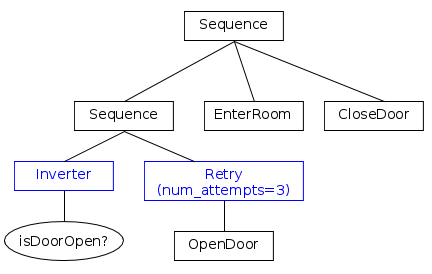
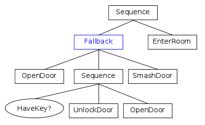
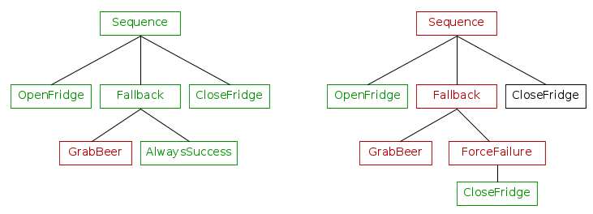

Introduction to BTs
Unlike a Finite State Machine, a Behaviour Tree is a tree of hierarchical nodes that controls the flow of decision and the execution of "tasks" or, as we will call them further, "Actions".
The leaves of the tree are the actual commands, i.e. the place where our coordinating component interacts with the rest of the system.
For instance, in a service-oriented architecture, the leaves would contain the "client" code that communicate with the "server" that performs the operation.
In the following example, we can see two Actions executed in a sequence,
DetectObject and GraspObject.

The other nodes of the tree, those which are not leaves, control the "flow of execution".
To better understand how this control flow takes place , imagine a signal called "tick"; it is executed at the root of the tree and it propagates through the branches until it reaches one or multiple leaves.
Note
The word tick will be often used as a verb (to tick / to be ticked) and it means
"To invoke the callback tick() called of a TreeNode".
Then a TreeNode is ticked, it returns a NodeStatus that can be either:
- SUCCESS
- FAILURE
- RUNNING
- IDLE
The first two, as their names suggest, inform their parent that their operation was a success or a failure.
RUNNING is returned by asynchronous nodes when their execution is not completed and they needs more time to return a valid result.
This C++ library provides also the status IDLE; it means that the node is ready to start.
The result of a node is propagated back to its parent, that will decide which child should be ticked next or will return a result to its own parent.
Types of nodes
ControlNodes are nodes which can have 1 to N children. Once a tick is received, this tick may be propagated to one or more of the children.
DecoratorNodes is similar to the ControlNode, but it can have only a single child.
ActionNodes are leaves and do not have children. The user should implement their own ActionNodes to perform the actual task.
ConditionNodes are equivalent to ActionNodes, but they are always atomic, i.e. they must not return RUNNING. They should not alter the state of the system.

Examples
To better understand how a BehaviorTrees work, let's focus on some practical examples. For the sake of simplicity we will not take into account what happens when an action returns RUNNING.
We will assume that each Action is executed atomically and synchronously.
First ControlNode: Sequence
Let's illustrate how a BT works using the most basic and frequently used ControlNode: the SequenceNode.
The children of a ControlNode are always ordered; it is up to the ControlNode to consider this order or not.
In the graphical representation, the order of execution is from left to right.

In short:
- If a child returns SUCCESS, tick the next one.
- If a child returns FAILURE, then no more children are ticked and the Sequence returns FAILURE.
- If all the children return SUCCESS, then the Sequence returns SUCCESS too.
Have you spotted the bug?
If the action GrabBeer fails, the door of the fridge would remain open, since the last action CloseFridge is skipped.
Decorators
The goal of a DecoratorNode is either to transform the result it received from the child, to terminate the child, or repeat ticking of the child, depending on the type of Decorator.
You can create your own Decorators.

The node Inverter is a Decorator that inverts the result returned by its child; Inverter followed by the node called DoorOpen is therefore equivalent to
"Is the door closed?".
The node Retry will repeat ticking the child up to N times (3 in this case) if the child returns FAILURE.
Apparently, the branch on the right side means:
If the door is closed, then try to open it. Try up to 3 times, otherwise give up and return FAILURE.
But...
Have you spotted the bug?
If DoorOpen returns FAILURE, we have the desired behaviour. But if it returns SUCCESS, the left branch fails and the entire Sequence is interrupted.
We will see later how we can improve this tree.
Second ControlNode: Fallback
FallbackNodes, known also as "Selector", are nodes that can express, as the name suggests, fallback strategies, ie. what to do next if a child returns FAILURE.
In short, it ticks the children in order and:
- If a child returns FAILURE, tick the next one.
- If a child returns SUCCESS, then no more children are ticked and the Fallback returns SUCCESS.
- If all the children return FAILURE, then the Fallback returns FAILURE too.
In the next example, you can see how Sequence and Fallbacks can be combined:

Is the door open?
If not, try to open the door.
Otherwise, if you have a key, unlock and open the door.
Otherwise, smash the door.
If any of these actions succeeded, then enter the room.
"Fetch me a beer" revisited
We can now improve the "Fetch Me a Beer" example, which left the door open if the beer was not inside the fridge.
We use the color "green" to represent nodes which return SUCCESS and "red" for those which return FAILURE. Black nodes are never executed.

Let's create an alternative tree that closes the door even when GrabBeer returns FAILURE.

Both these trees will close the door of the fridge, eventually, but:
-
the tree on the left side will always return SUCCESS if we managed to open and close the fridge.
-
the tree on the right side will return SUCCESS if the beer was there, FAILURE otherwise.
Everything works as expected if GrabBeer returns SUCCESS.